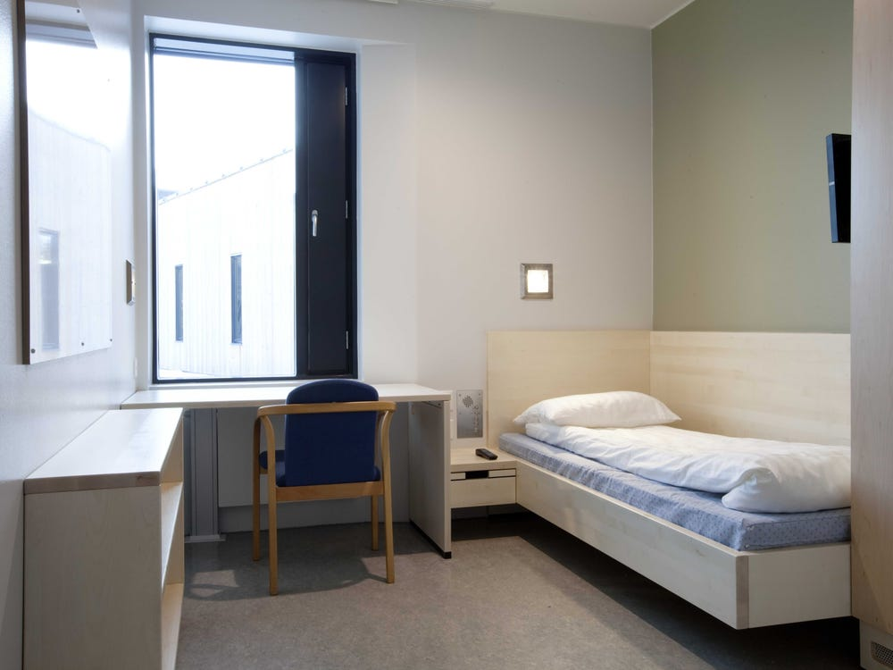
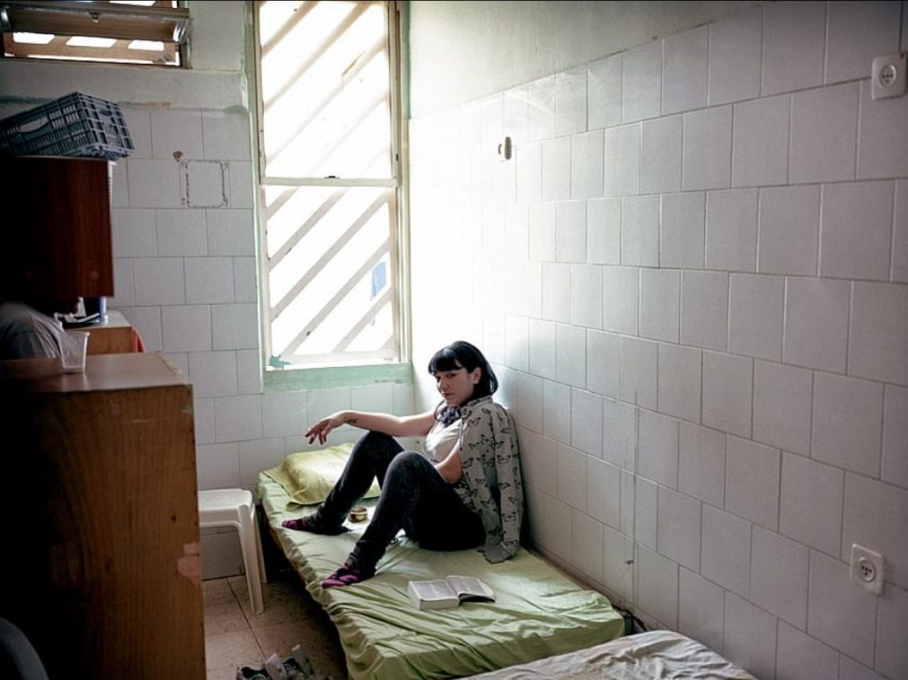
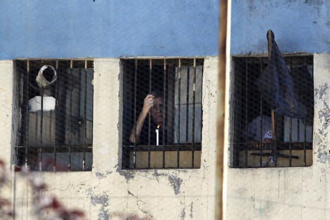
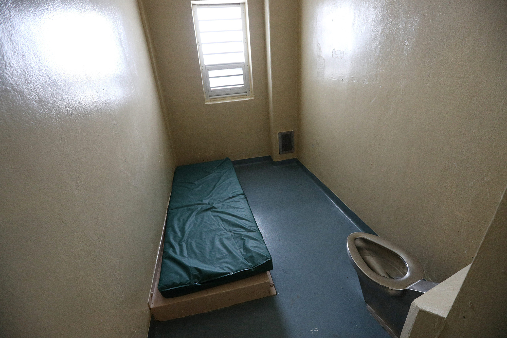

The Norweigan Prison System
Out of the countries tracked, Norway had the lowest rate of recidivism.

Norway's prisons have a strong focus on "restorative justice". The system was designed to help
inmates re-enter society as law-abiding citizens. The most obvious difference between the prison
buildings in Norway compared to other countries is the size and quality of the cells. The cells
resemble dorm rooms, and prisoners often have their own bathrooms and kitchens. In accordance with
Norway’s desire to rehabilitate their inmates, they provide a variety of programs to their inmates.
These programs can be recreational, such as yoga, wood working, and studio art, or they can help train
inmates in new skills such as carpentry or computer programming which helps them find jobs after they
are released. Norway has also changed their life sentencing policy, so the maximum sentence for crimes
during peace time is 21 years. Prior inmates have spoken highly of their stay in prison, with some going
on to publish books, receive diplomas, and continue on to higher education during or after their sentence.
The Israeli Prison System
Out of the countries tracked, Israel placed at the 25th percentile.

Israeli prisons seem to use more punitive measures to deter citizens from commiting crimes, as being in
prison is both a burden to one’s family and by no means a comforting experience. Much like American prisons,
Israeli prisons are extremely profitable. Food is given to all prisoners, however in every prison there is also a
canteen from which prisoners can purchase food. Due to insufficient funding, many inmates have described the
quality and amount of food as being poor, and need to purchase food from the canteen. Inmates’ families must
shoulder the cost of the food, in addition to other fines. The cells themselves are cramped and overcrowded,
and sanitary conditions are poor. Rehabilitative services such as education or job training are also uncommon and
poorly funded. The goal of the prison systems seems to be simply to hold prisoners until they complete their sentence,
and the threat of the experience itself may serve to prevent people from reoffending.
The Chilean Prison System
Out of the countries tracked, Chile placed at the 50th percentile.

The Chilean prison system, whether by intention or not, is extremely punitive to its prisoners. There is a severe
issue with overcrowding as a result of construction delays in new facilities which has even caused the deaths of tens of
inmates. The country also has harsh sentencing guidelines, but the court systems are backed up which results in people
waiting in prison for their trials which only land them longer sentences. There are also no effective alternatives to
their prisons, which contributes to the extreme overcrowding. Chile has the median rate of recidivism out of the countries
looked at, which means, more so than in other countries, the prison system works somewhat well to prevent it’s inmates from
reoffending, however there are clearly ways the country can improve.
The Canadian Prison System
Out of the countries tracked, Canada placed at the 75th percentile.

Candian prisons are much like those in the United States, however unlike the US, Canada does not use the
death penalty. Candaian prisons also heavily rely on solitary confinement, both as a punishment, and secondarily as a
means to “warehouse” prisoners in overcrowded facilities. The pandemic has also revealed issues within the system
regarding healthcare, as COVID spread very quickly throughout prisons and it was difficult to both treat those who have
been infected and prevent further infection effectively. Prior inmates have also testified that they feel as though the
prison guards and other officials do not care about their well being, and rather seem focused on maintaining order. This
attitude results in the prisoners not being fully equipped for a life after their sentence is over, which may contribute
to the higher rates of recidivism.
The Danish Prison System
Out of the countries tracked, Denmark had the highest rate of recidivism.
Danish prisons look much different than one would expect a prison to. For one, many of the prisons are “open
prisons”, with no barbed wire fences surrounding the buildings. This lack of security also contributes to the drug problem
within the prisons, with prisoners smuggling in drugs daily. Officials are aware of this problem, however they take a more
laid back approach to these issues, accepting the fact that there will be drugs and escaping prisoners. Danish prisoners are
able to attend classes, go to work, and even shop for themselves. Sentences are also light, with the average sentence being only
6 months. The focus of the prison system seems to be to resemble “normal” life outside of prison as closely as possible, so as to
prepare its prisoners for their life after they serve their sentence.